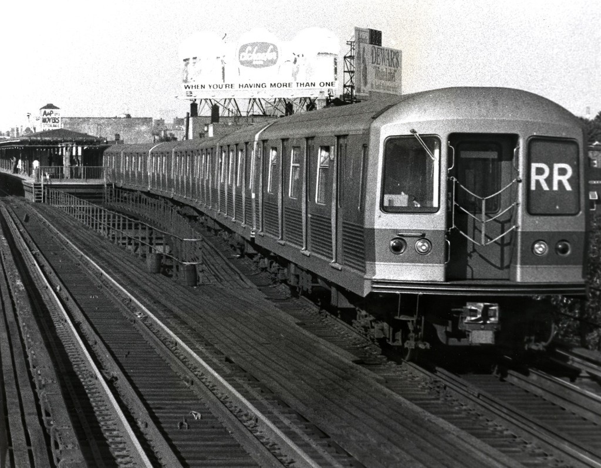

An RR train at the “other end” of the line in Queens. The cars are R-42s, the station is Astoria Boulevard/Hoyt Avenue, the date is June 20, 1970, and the beer is Schaefer when you’re having more than one. These days this station is serviced by the N line, not the R. Photo from the George Conrad collection.